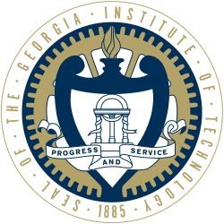
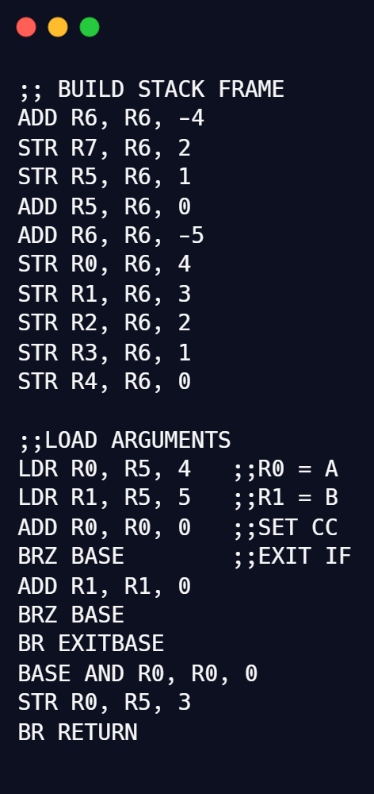
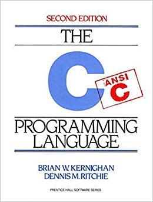
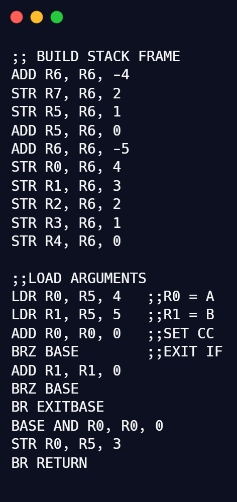
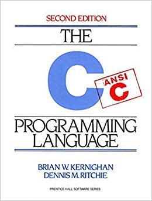

About
Hi, I'm David, a computer science major at Georgia Tech. For the past couple years, I have been coding non-stop and would love to share my projects and exeperiences with you! My interests vary from operating systems to app development. I'll be graduating from Tech with threads in systems architecture and intelligence in 2022. I appreciate the digital visit and would love to learn more about you! Feel free to reach out using the icons below.
Projects
LC-3 Assembler
Inspired by my favorite CS class, Computer Organization and Programming, I created an assembler for the LC-3. Written entirely in C, this program takes in a file with LC-3 assembly code, parses each line for valid syntax, and delivers 16-bit machine executable code. The assembler follows a two pass structure. The first pass parses pseudo-operations and labels, while the second converts assembly into machine code. To maximize efficiency, the second pass precalculates the sums of the keywords, similar to the Rabin-Karp pattern matching algorithm. The code is organized to minimize repition, while still allowing for readability. I am now a Teaching Assistant for CS 2110 and plan to use this program as an example for my students. If you'd like to see more, click the link here.
Activity Tracker
Written with my colleague, Charles Jenkins, Activity Tracker is an android application designed to intuitively keep track of the amount of time a user spends on certain activities. This project introduced me to the programming language Kotlin and taught me the basics of databases with SQLite. We are still working to improve the design layout when viewing the statistics of an Activity. If you are interested to learn more about this project, click the link here.
Matrix Multiplier
This android application was inspired by my Linear Algebra class and allows the user to multiply matricies together. Coded in java, this was the first android app I have created. It was an excellent learning experience in that I now know I prefer backend engineering over frontend. This app allows the user to multiply many matrices together of varying sizes (Up to 99x99). The application architecture follows a fragmented design with a simple navigator fragment to swipe through the different menus. If you'd like to see more, click the link here.
Involvement
Undergraduate Teaching Assistant
Term 1: May - July 2020, Term 2: August - December 2020
CS 2110, Computer Organization and Programming, is a 4 credit lab course designed to teach students the lower level parts of computer science. The course begins by introducing students to boolean arithmetic and logic gates. We then venture into the workings of the LC-3, which is a theoretical CPU designed to teach students finite state machines and assembly. The last third of the course is devoted to the programming language C. I've had the priviledge to TA this course during the summer and fall semesters of 2020. TA'ing for 2110 has been an irreplacable learning and growing experience for me as a computer scientist. From writing autograders, to teaching students, I've gained quality communication skills and a much deeper understanding of the content material. I've also extremely proud to have worked alongside some of the most brilliant people I have encountered here at Tech.
 



Contact
Thank you again for visiting my webpage! Please feel free to reach out to this email (dburns37@gatech.edu) if you have any more questions. You also can access my resume, linkedin, and github with the icons in the lower left-hand corner.